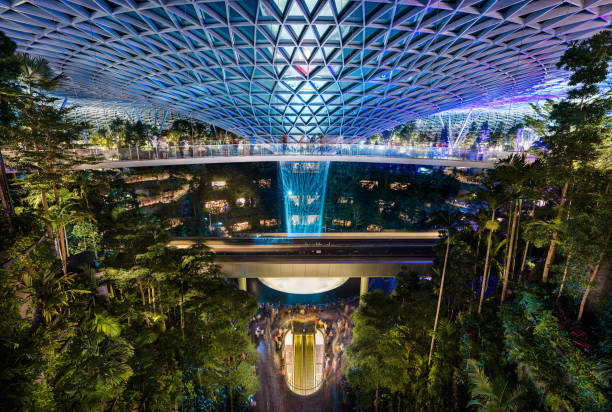
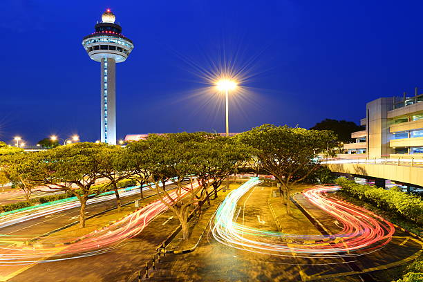
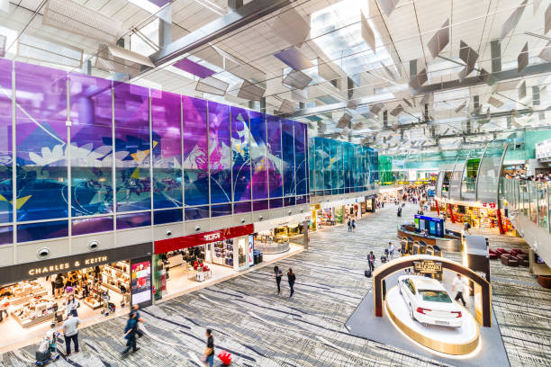
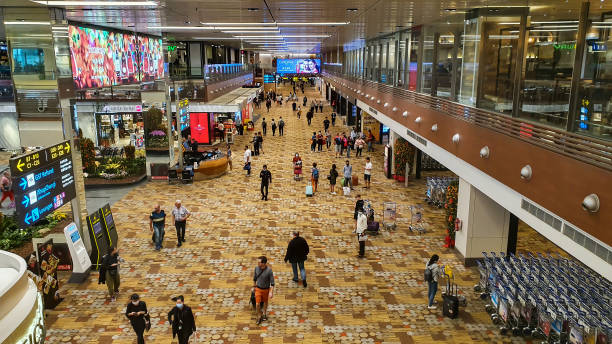
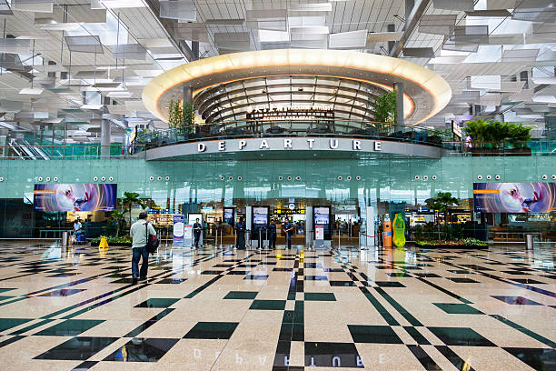

Medzinárodné letisko Changi v Singapure je hlavným a jediným dopravným uzlom pre celú krajinu a zároveň jedným z najväčších centier osobnej dopravy v juhovýchodnej Ázii. Letisko Changi má mnoho štatútov a regálií, mnoho jedinečných vecí, ktoré ťažko nájdete na akomkoľvek inom letisku na svete. V tomto článku sa pokúsim porozprávať o tomto strategickom zariadení nie z pohľadu cestujúceho, hoci určite napíšem niekoľko tipov a trikov, ale skôr z pohľadu turistu, keďže letisko Changi sa právom považuje za jednu z hlavných atrakcií celého Singapuru.
Fakty o najlepšom letisku na svete
- Je najväčším zamestnávateľom v Singapure, zamestnáva tu takmer 15 000 ľudí.
- Letisko Changi je na 10. mieste na svete z hľadiska počtu cestujúcich, ročne ho navštívi približne 62 miliónov cestujúcich.
- Letisko Changi sa podieľa na celkovom HDP Singapuru približne 5 % - je jedným z najsilnejších prispievateľov k singapurskej ekonomike.
- Letisko je otvorené od roku 1981 a dnes má 3 vzletové a pristávacie dráhy
- Za 40 rokov prevádzky získalo medzinárodné letisko Changi takmer 300 medzinárodných ocenení
- Devätnásťkrát bolo vyhlásené za najlepšie letisko na svete, z toho sedemkrát za sebou. Žiadne iné letisko na svete sa nemôže pochváliť takýmito úspechmi
Najlepšie fotografie letiska:




